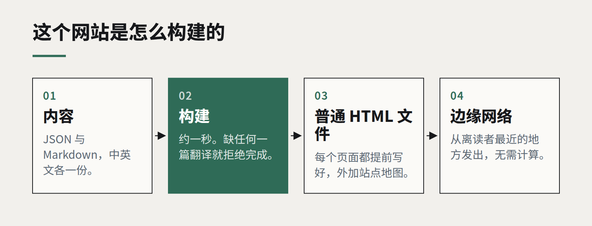

洞察
技术栈
静态优先：为什么我们自己的网站就是一堆普通文件
没有服务器、没有数据库、没有框架运行时——页面在你眨完眼之前就加载好了。对大多数企业网站来说，静态生成是最被低估的架构。

你正在读的这个网站，是一个装满普通 HTML 文件的文件夹。一个小脚本读取我们的内容——案例、这些文章、中英文两个版本的首页文案——然后提前写出每一个页面。没有应用服务器，没有数据库，访客的浏览器里也没有运行任何框架。整个构建大约一秒。
这是我们刻意的选择。对于那些和我们一样、网站内容主要是一周改几次而不是一秒改几次的客户，我们也推荐同样的做法。
静态能换来什么
- 速度。 预先构建好的页面，直接从离访客最近的内容分发网络发出。没有什么需要计算，第一个字节几乎立刻到达，页面在任何脚本运行之前就已可读。
- 安全。 网站背后没有服务端代码、没有数据库，大多数常见的攻击路径根本不存在。没有东西可以被注入，也不用在周二晚上紧急打补丁。
- 成本。 在典型的企业流量下，托管静态文件几乎不花钱；一篇文章被大量转发时，费用也不会陡增。
- 可靠。 某个 API 宕机、某个插件没人维护、当初建站的开发者离开了，静态网站都照常运行。
- 长久。 今天写的 HTML，二十年后依然能在浏览器里打开。能做出同样承诺的应用框架寥寥无几。

“可是我们需要……”
人们以为必须用动态网站才能实现的功能，大多数其实不需要。
- 表单可以提交到托管平台的表单处理服务，或者一个小小的无服务器函数。
- 搜索几百个页面，可以用一个预先构建好的索引，在浏览器里完成。
- 多语言内容不过是两套生成出来的页面，它们之间有正确的
hreflang链接。 - 非开发人员编辑可以用无头内容管理系统，在发布时触发重新构建；小团队也可以把内容放在结构化文件里，配一个简单的审核流程。
- 交互组件，比如计算器、配置器甚至实时 3D，可以加在特定页面上，而不必让整个网站变成动态的。
什么时候静态是错的
如果内容是按访客个性化的、每秒都在变、或者取决于谁登录了——客户门户、实时看板、库存实时变化的商店——你就需要服务器。即便如此，应用周围的营销和内容页面，通常也最好用静态方式构建，并与应用分开。
我们怎么做
我们自己的生成器只有几百行、没有任何依赖：内容放在 JSON 和 Markdown 里，模板就是普通函数，还有一个校验步骤——缺了任何一篇翻译就拒绝构建——以及每次运行都会重写的站点地图。它刻意保持无聊。任何读得懂 JavaScript 的人都能修改它，也没有什么需要升级。
更大的网站，我们会改用成熟的静态网站生成器，原则是一样的：在构建时把工作做一次，而不是每次访问都做一遍。大多数企业网站被阅读的次数远多于被修改的次数，它们的架构理应反映这一点。
继续阅读
全部洞察